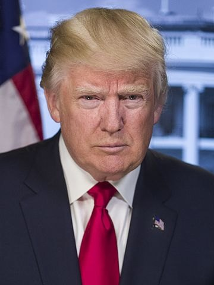

The only president impeached twice and the first convicted of a felony. His first term cut taxes and reshaped the Supreme Court, and ended amid COVID-19 and the January 6 attack on the Capitol. His second term brought sweeping executive actions, tariffs, and mass pardons, several of which courts have struck down.
Shaded areas show the years in office, with a few years before and after for comparison. Budget years run October to September, so a new president's first budget year starts the fall after they take office.
Jan 20, 2017: $19.95 trillion → Jan 20, 2021: $27.75 trillion · Jan 21, 2025: $36.22 trillion → Sept 24, 2026 (latest): $40.07 trillion
Debt as a share of GDP. Above 100% means the debt is bigger than a year of everything the country produces.
Money borrowed each budget year (below the line) or paid down (above).
Jan 2017: 4.7% → Jan 2021: 6.4% · Jan 2025: 4.0% → Aug 2026: 4.1% (monthly). Chart shows yearly averages.
How much prices rose each year (consumer price index).
What everyday prices and paychecks did while in office.
Prices use the consumer price index (MeasuringWorth). The minimum wage is the federal rate set by Congress.
505 orders, numbered 13765–13984 (first term); 14147–14431 so far (second term). 220 in the first term; 285 in the second term through September 2026, including 225 in 2025, the most in a single year since Franklin Roosevelt.
Source: Federal Register: Trump executive orders (full list of every order).
Suspended entry from seven mostly Muslim countries. Blocked by courts; a later version was upheld by the Supreme Court in Trump v. Hawaii (2018).
Federal RegisterRequired agencies to repeal two regulations for each new one.
Federal RegisterCreated a new class of federal employees who could be fired more easily. Revoked by Biden and revived in 2025.
Federal RegisterOrdered all federal diversity, equity and inclusion offices and programs closed.
Federal RegisterCreated the 'Department of Government Efficiency' led by Elon Musk, which cut grants, contracts and staff across agencies.
Federal RegisterDenied citizenship to U.S.-born children of parents here illegally or temporarily. Struck down by the Supreme Court in Trump v. Barbara (June 30, 2026).
Federal RegisterImposed tariffs on nearly every country under an emergency powers law. The Supreme Court ruled 6–3 on February 20, 2026 that the law does not allow tariffs.
Federal RegisterA pardon wipes out the punishment for a federal crime; a commutation shortens a sentence but leaves the conviction. First term: 144 pardons and 94 commutations. Second term through September 2026: 136 individually listed pardons and 28 commutations, plus two group proclamations covering about 1,500 January 6 defendants (14 of them commutations) and 77 people tied to the 2020 'alternate electors' plan.
Source: U.S. Dept. of Justice, clemency grants, which lists every recipient with the crime and sentence.
The crime: Offenses at the January 6, 2021 Capitol attack, from trespassing to assaulting police officers and seditious conspiracy
Sentence: From probation up to 22 years (Proud Boys leader Enrique Tarrio, pardoned)
Why it drew attention: Issued on his first day back. Included people convicted of violence against police, which drew criticism from police groups and members of both parties.
SourceThe crime: Any federal offenses tied to efforts to overturn the 2020 election, including the 'alternate electors' plan
Sentence: None: no federal charges had been filed
Why it drew attention: Largely symbolic. It does not affect state cases, several of which were pending.
SourceThe crime: Lying to Congress, obstruction and witness tampering in the Russia investigation (convicted 2019)
Sentence: 40 months
Why it drew attention: A longtime Trump adviser who had refused to cooperate with investigators.
SourceThe crime: Lying to the FBI about contacts with the Russian ambassador (pleaded guilty twice)
Sentence: Before sentencing; the Justice Department had moved to drop the case
Why it drew attention: Trump's first national security adviser.
SourceThe crime: Tax fraud, bank fraud, conspiracy and witness tampering
Sentence: 7½ years
Why it drew attention: Trump's 2016 campaign chairman, convicted in cases brought by the special counsel.
SourceThe crime: Murder and manslaughter in the 2007 Nisour Square shooting that killed 14 Iraqi civilians
Sentence: Life (one guard) and 12–15 years
Why it drew attention: Iraq's government and UN experts condemned it; supporters argued the sentences were unjust.
SourceThe crime: Criminal contempt for defying a court order to stop racially profiling Latinos
Sentence: Before sentencing
Why it drew attention: The first pardon of Trump's presidency; an early political ally.
SourceThe crime: Running Silk Road, a dark-web drug marketplace
Sentence: Life without parole
Why it drew attention: A campaign promise to libertarian voters.
SourceThe crime: Wire fraud and aggravated identity theft (pleaded guilty)
Sentence: 87 months; about three months served
Why it drew attention: A former Republican congressman expelled by the House in 2023.
SourceThe crime: Failing to maintain an anti-money-laundering program at Binance (pleaded guilty)
Sentence: Four months in prison; $50 million fine
Why it drew attention: Critics pointed to Binance's business ties to the Trump family's crypto venture, World Liberty Financial; the White House denied any connection.
SourceThe crime: Conspiring to import cocaine into the U.S. and weapons charges
Sentence: 45 years
Why it drew attention: A former president of Honduras, convicted in 2024.
SourceThe crime: Bribery and money laundering charges tied to Azerbaijan and a Mexican bank
Sentence: Not yet tried
Why it drew attention: A Democratic congressman from Texas.
SourceThe same checklist for every president. Tap a row for details and sources.
December 18, 2019: abuse of power and obstruction of Congress over pressuring Ukraine to investigate Joe Biden (acquitted February 5, 2020). January 13, 2021: incitement of insurrection over January 6 (acquitted February 13, 2021, 57–43, with 7 Republicans voting to convict).
SourceHush-money records (New York), classified documents (federal), 2020 election interference (federal) and 2020 election interference (Georgia), all in 2023. Both federal cases were dropped after his 2024 election win, under the Justice Department policy against prosecuting a sitting president. The Georgia case was dismissed in November 2025.
SourceA Manhattan jury convicted him on May 30, 2024 of falsifying business records to hide a $130,000 payment to Stormy Daniels. He was sentenced to an unconditional discharge (no penalty) on January 10, 2025. His state appeal is pending; a federal judge rejected his third bid to move the case to federal court on August 28, 2026.
SourceFound liable for sexual abuse and defamation of writer E. Jean Carroll ($5 million, 2023; $83.3 million, 2024; both upheld on appeal). Found liable for fraud by inflating his wealth; the $454 million penalty was thrown out on appeal in 2025, but the liability finding stood.
SourceCampaign chairman Paul Manafort, national security adviser Michael Flynn, adviser Roger Stone, personal lawyer Michael Cohen, chief strategist Steve Bannon and trade adviser Peter Navarro were convicted or pleaded guilty. Former national security adviser John Bolton, by then a critic, pleaded guilty in June 2026. No cabinet secretary was charged.
Robert Mueller (Russia, 2017–19): charged 34 people and 3 companies; did not establish a conspiracy; declined to exonerate him on obstruction. John Durham (the Russia probe's origins, 2019–23). Jack Smith (2022–25): brought both federal indictments.
SourceDocumented: Justice Department leaders overruled prosecutors on Roger Stone's sentence (2020), prompting all four to withdraw. Trump pressed the department to back false election-fraud claims (Senate Judiciary report, 2021). In 2025 he publicly urged his attorney general to prosecute named critics, several of whom were then indicted. Two of those cases were thrown out because the prosecutor was unlawfully appointed.
SourceWhat happened, what was proven, and how it ended.
Before the 2016 election, lawyer Michael Cohen paid adult-film actress Stormy Daniels $130,000 to stay quiet about an alleged affair. Trump reimbursed him through payments recorded as legal fees.
Outcome: Convicted on 34 felony counts (2024); unconditional discharge; appeal pending.
SourceRussia interfered to help Trump's campaign, and campaign officials had repeated contacts with Russian-linked figures. The special counsel investigated coordination and obstruction.
Outcome: No criminal conspiracy established; several aides convicted of other crimes; obstruction left unresolved; a bipartisan Senate report called campaign contacts a 'grave counterintelligence threat'.
SourceOn a July 25, 2019 call, Trump asked Ukraine's president to investigate Joe Biden while military aid to Ukraine was on hold.
Outcome: First impeachment; acquitted.
SourceTrump pushed false fraud claims, pressed state officials and Vice President Pence to reject results, and urged supporters to march on the Capitol, where a mob forced Congress to flee.
Outcome: Second impeachment (acquitted); federal and Georgia charges later dropped; about 1,500 rioters pardoned in 2025.
SourceHe kept boxes of classified records after leaving office and, prosecutors alleged, obstructed efforts to recover them. The FBI searched his estate in August 2022.
Outcome: Indicted on 40 counts; dismissed in 2024 on the ground that the special counsel was unlawfully appointed.
SourceUnder a 'zero tolerance' policy, about 5,500 children were separated from their parents, many without records to reunite them.
Outcome: Ended by executive order in June 2018 after a court ordered reunification; government investigators documented the failures.
SourceHe imposed sweeping tariffs under an emergency powers law rather than asking Congress.
Outcome: Supreme Court ruled 6–3 (February 20, 2026) that the law does not authorize tariffs.
SourceAfter Trump publicly urged his attorney general to charge named critics, former FBI director James Comey and New York Attorney General Letitia James were indicted.
Outcome: Both cases dismissed (November 2025) because the prosecutor was unlawfully appointed; the Justice Department's appeal is pending.
SourceThe family launched crypto businesses, including a $TRUMP meme coin and World Liberty Financial, while he set crypto policy. The administration also accepted a luxury 747 jet from Qatar for use as Air Force One.
Outcome: Critics allege conflicts of interest and possible violations of the Constitution's emoluments clause; no court has ruled on them.
SourceTop officials discussed upcoming military strikes in Yemen on the Signal messaging app in a group chat that accidentally included a journalist.
Outcome: The Pentagon inspector general found the defense secretary's use of Signal risked compromising sensitive information.
SourceWidely quoted remarks, with the context they were said in.
I just want to find 11,780 votes.
You also had people that were very fine people, on both sides.
He who saves his Country does not violate any Law.
It's going to disappear. One day, it's like a miracle, it will disappear.